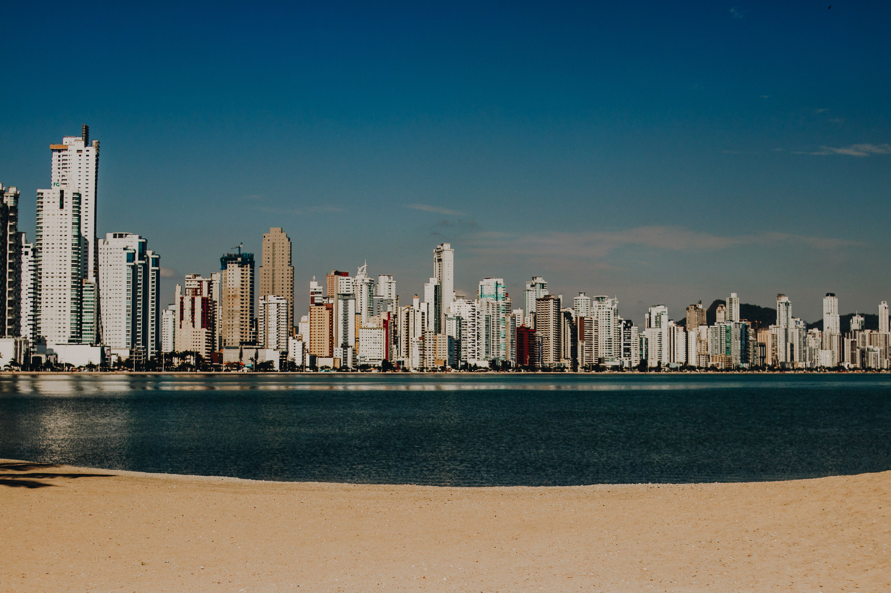

Sobre o Local
Balneario Camboriu é um dos destinos turísticos mais famosos do Brasil. Localizada no litoral norte de Santa Catarina, a cidade é conhecida por suas praias, edifícios modernos e diversas atrações turísticas.
Tenho vontade de conhecer Balneário Camboriú por causa das belas paisagens, da infraestrutura urbana, dos passeios de teleférico e das opções de lazer para moradores e visitantes.
Estado: Santa Catarina
País: Brasil
Idioma: Português
Moeda: Real Brasileiro (BRL)
Atrações: Praia Central, Cristo Luz, Parque Unipraias e Molhe da Barra Sul
Clima

Temperatura: 8°C
Condições: Parcialmente Nublado
Velocidade do Vento: 12 km/h
Sensação Térmica: